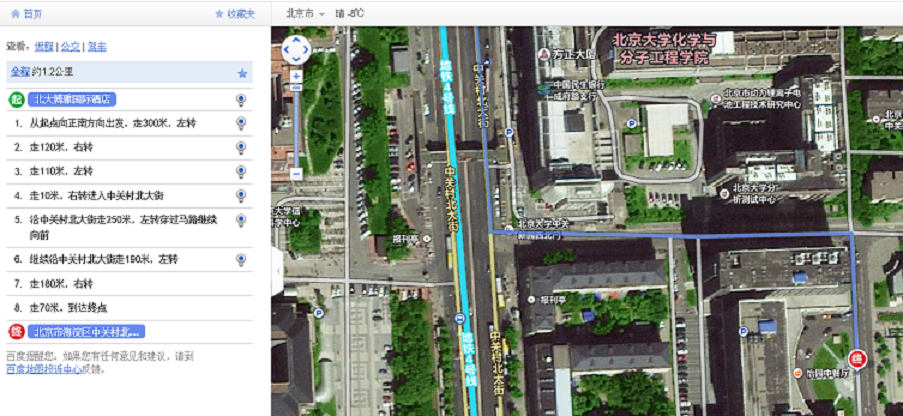

|
 |
 |
|---|---|---|
Home | Schedule | Invited Speaker Bios | Venue/Hotel Direction | ISHCS 2012 | ISHCS 2011 |
||
3rd International Symposium on High Confidence Software (ISHCS 2013)December 21-22, 2013, Beijing, ChinaHost: Institute
of Software and Key
Laboratory of High Confidence Software Technologies,
Ministry of Education, Peking University |
The symposium will be hosted at 北京大学中 关新园一号楼11层集贤厅.
Here is the direction map image from the speakers' hotel to the meeting location, which is the building (building 1 on the left hand side of the destination marked on the map image):

The direction is simple:
- 从旅馆出到中关村北大街，朝南（北大东门方向）走
- 越过北大东三门以北一点的天桥（到天桥的东边）[如上地图以及如下其它地图指示是穿过北大东二门外的红绿灯十字路口，也是可行的]
- 进入中关新园西北门
- 走过车栏杆的哨点，第一个十字路口右拐
- 50米后右手边的大楼就是中关新园一号楼（其正面标有“中关新园一号”大字）
- 进入楼后，乘电梯到11楼，走到集贤厅。
Here is the Baidu Map.
Here is the Bing map direction.
Note that due to space limit, the symposium is open for participation registration by only those who receive invitation emails to register.
If you haven't received an invitation email to register but have interest to attend the symposium, please send an email to the symposium organizers to check space availability.